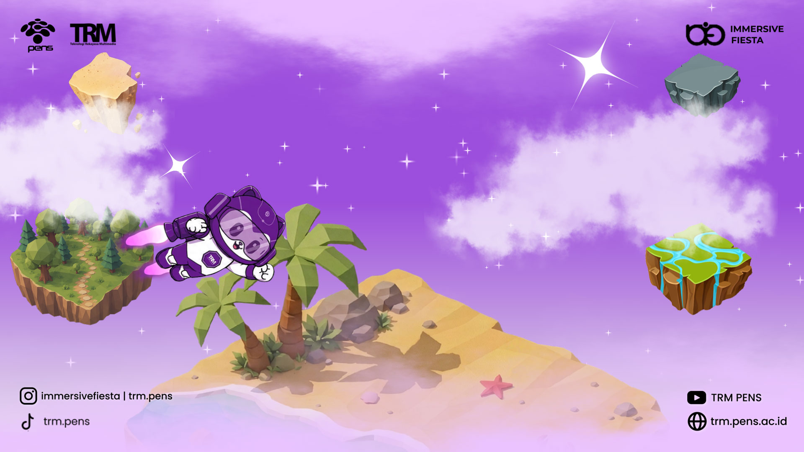
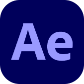

STORY OF THIS PROJECT
Animasi ini dirancang sebagai tampilan selama audiens menunggu rangkaian acara Immersive Fiesta dimulai. Desain ini mengangkat suasana dunia fantasi bernuansa ungu, dengan pulau-pulau imajinatif dan maskot yang menjadi bagian dari identitas visual acara. Melalui perpaduan ilustrasi, warna, dan motion, layar tunggu ini membantu menjaga suasana acara tetap hidup sekaligus mengajak audiens mengenal tema Immersive Fiesta.
Pada versi pertama, maskot tampil menjelajahi dunia pulau dengan latar langit ungu dan hamparan awan. Elemen visual disusun untuk membangun kesan petualangan dan menghadirkan suasana yang selaras dengan tema “Explore Beyond Reality. Expand Your Imagination”.
Versi kedua mempertahankan dunia visual yang sama dengan variasi pada komposisi dan animasi, sehingga keduanya terasa konsisten sebagai satu rangkaian. Kedua desain ini menjadi cara untuk menyambut audiens dan mengisi jeda acara dengan visual yang menarik.
TOOLS USED FOR THIS PROJECT

AFTER EFFECTSRESULT OF THIS PROJECT
Mari kita bangun sesuatu yang luar biasa bersama
Terbuka untuk kesempatan magang, project freelance atau kolaborasi riset.